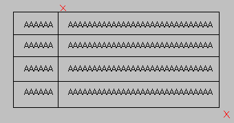
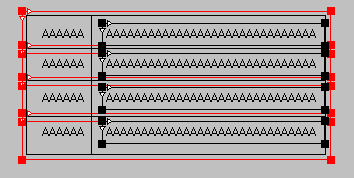
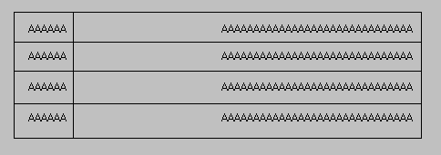

Un objet est sélectionné lorsqu'il est encadré par ses poignées.
Si vous cliquez gauche sur un objet, la sélection de cet objet est inversée.
Si vous double-cliquez sur un objet avec le bouton gauche de la souris, vous accédez à la fenêtre des propriétés de l'objet.
Si vous cliquez gauche avec la touche Shift enfoncée, vous inversez la sélection de l'objet courant tout en conservant la sélection précédente. Cette manipulation permet de sélectionner simultanément plusieurs objets pour les déplacer ou effectuer un traitement sur ces objets. En particulier, une modification dans la fenêtre des propriétés s'applique à tous les objets sélectionnés.
Si vous déplacez la souris tout en maintenant le bouton gauche enfoncé, vous sélectionnez tous les objets entièrement compris dans le rectangle de sélection (lasso).
Si vous cliquez dans le fond de la page, tous les objets sont désélectionnés.
Fonctions de sélection avancées
Si vous déplacez la souris tout en maintenant le bouton gauche enfoncé et la touche Ctrl enfoncée, vous sélectionnez tous les objets inclus dans le rectangle de sélection plus tous les objets ayant une intersection avec le cadre de sélection.
Les boîtes des objets entièrement inclus dans le cadre de sélection sont en couleur noire, les boîtes des objets ayant seulement une intersection avec le cadre de sélection sont rouges :
Le déplacement des objets rouges n'affecte pas les objets noirs.
Le déplacement d'un objet noir provoque un changement de taille des objets rouges. Cela permet d'agrandir les cadres.
Le déplacement d'un objet noir avec la touche Shift enfoncée n'affecte que cet objet (et pas les objets rouges).
Pour ajouter un objet à la sélection noire, cliquez dessus avec la touche Shift enfoncée.
Pour ajouter un objet à la sélection rouge, cliquez dessus avec les touches Shift et Ctrl enfoncées.
Exemple :
Pour insérer rapidement une colonne dans le tableau ci-dessous, sélectionnez les objets en reliant les deux croix rouges et avec la touche Ctrl enfoncée.

Nous obtenons la sélection suivante :

En déplaçant les objets avec les flèches ou la souris, les traits et cadres sont automatiquement agrandis et nous obtenons le résultat suivant :
